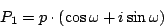
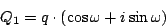
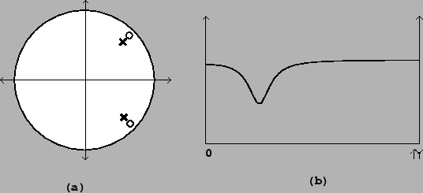

Next: Butterworth filters
Up: Designing filters
Previous: Band-pass filter
Contents
Index
Peaking and stop-band filter
In the same way, a peaking filter is obtained from a shelving filter by rotating the
pole and the zero, and by providing a conjugate pole and zero, as shown in
Figure 8.16. If the desired center frequency is  , and
the radii of the pole and zero (as for the shelving filter) are
, and
the radii of the pole and zero (as for the shelving filter) are
 and
and  , then we place the the upper pole and zero at
, then we place the the upper pole and zero at


As a special case, placing the zero on the unit circle gives a stop-band filter;
in this case the gain at the center frequency is zero. This is analogous
to the one-pole, one-zero high-pass filter above.
Figure 8.16:
A peaking filter: (a) pole-zero diagram; (b)
frequency response. Here the filter is set to attenuate by 6 decibels at
the center frequency.
|  |
Miller Puckette
2006-12-30